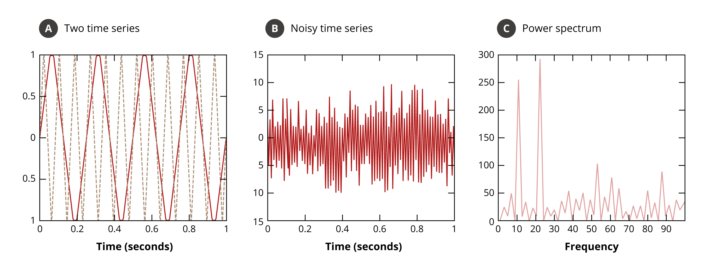
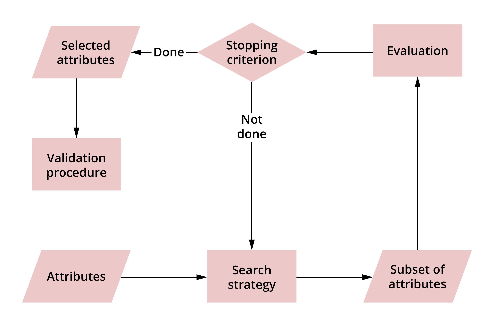

Data preparation
In this lesson you will learn about the different techniques for data preparation.
Learning outcomes:
After completing this lesson you should be able to:
- perform data wrangling
- solve data quality issues
- perform feature selection and simple dimensionality reduction
- explain why these techniques are performed and when.
As you saw earlier, data comes in all sorts of formats and shapes and in order to be able to perform any analysis, you would need to make the data suitable for the task at hand.
There are broadly two main reasons to do this:
-
The data is often collected separately and detached from the mining task. Often there are specific data techniques that are known to suit the task at hand, so the nature of the techniques dictates some specific data preparation regime that you would want to carry on the data. For example, for some tasks, new features need to be generated from the original features, for some other tasks the shape of the data needs to be changed.
-
Even without consideration of any specific task or technique, often the data can suffer from issues that need to be addressed before any analysis is carried through. These issues include noise, repetition, missing-ness and scalability.
Data pre-processing in context
Before we do any processing, we need to understand the specific task, in what way the data will be utilised and in what context. The data can come in a form or format that, if not changed, will make the analysis process itself unnecessarily more difficult. This applies to simple queries or more complicated tasks – they all require an appropriate level of preparation to ensure that the analysis or querying process is smooth.
Data wrangling and ways of data pre-processing
A data scientist must often wrestle with the data to make it suitable for their needs, a process known as data wrangling. The process somehow involves a bit of haggling and hacking and often, in order to perform the process, the structure and shape of the data needs to be checked and reviewed. This section will give you a quick overview of some of the techniques used.
Sampling
The concept of sampling is widely used in statistics and data mining. In statistics, the default position is that obtaining the entire data population is often infeasible and physically too expensive. In data mining, processing the entire dataset, even if it is available in some storage, might be too computationally expensive to do.
Read section 2.3.2 (pp.72-76) of Chapter 2 in the text Introduction to Data Mining (Tan et al 2019). This section will give you further information on sampling and the different types of data sampling that can be conducted.
In both statistics and data mining, a subset of the data is sampled, by selecting some of the rows rather than all of them. Sampling is done randomly to avoid a biased representation of the data, which would be misleading for the model.
There are several approaches to this randomisation, and the most notable is stratification, which is maintaining the distribution of the underlying data when it is sampled. The idea of stratification is commonly used in data science, so understanding it helps in several situations.
In proportionally stratified sampling, sampling is conducted as per the group of objects distribution/ratios in order to preserve the footprint of the original dataset in the sampled dataset.
Example
There is a dataset of three classes – A, B and C. The distribution in the original dataset, which contains approximately 10 million records, is roughly:
- A: 65%
- B: 25%
- C: 10%.
If this data is sampled randomly, without taking into consideration the distribution of the classes, this distribution might change if the randomisation is unlucky.
If class C is oversampled, the sampled dataset may end up with the distribution of, for example:
- 60%
- 20%
- 20%.
This would have a knock-on effect on the results of the model. To avoid such a situation, it can be decided in advance to sample, for example, 50% of the entire dataset.
By sampling 50% of each class separately and then combining the resultant record, the same class distribution of the original dataset (65%, 25% and 10%) would have been maintained, despite having half the number of records. Similarly, if the target is to balance a dataset of two classes to compensate for a rarity of one of the classes then equally stratified sampling can be employed to make sure that there is 50% of both classes.
The concept of sampling occurs indirectly when the dataset is split into training, testing and validation. When training a model to recognise a class the performance of the model should be evaluated after it has been built or deployed. To do this, the same dataset available for training a model (making it learn from the data) and for evaluating it often has to be utilised. This means that a small proportion of the dataset for testing ought to be set aside, for example, 30%.
In this case the scheme for the desired sampling also applies for splitting the data. In particular, the testing data should almost always be representative of the dataset and the proportional stratified sampling approach applied, to set aside a 30% of data that the model will not see during training. Once training finishes, the model is applied as it is, without adjusting on the 30% testing data and the accuracy obtained from the model is reported.
This invites discussion on whether several splits need to be performed and the average reported on, as well as how several models or techniques are compared and validated. Both of these topics will be discussed later, along with how to measure the performance of a model in the next couple of units.
Note
Make sure to differentiate between sampling rows and selecting a subset of fields or columns.
Video
Now watch this video, in which Abdulrahman explains data attributes and objects, types of data and data quality.
You can download the slides shown in the video (PPT) and the transcript (PDF) here.
Slides are reproduced from Tan et al (2019), Introduction to Data Mining, with kind permission of the authors.
Filtering
Sometimes a feature must be obtained or deduced from other features. This can be done via a simple calculation on some features, or by larger processing of a set of features to obtain better representation for the task in hand.
For example, from a set of artefacts, two features are the mass and volume. The density of these artefacts (density=mass/volume) can be deduced, which would be a good predictor to classify items based on the material that they are made of.
An example of a more involved process is a Fourier Transformation (FT). FT is used to extract or map the data into a new space. It is well known that if two time series with different frequencies and some noise are combined, a surprisingly chaotic signal would be received (which would be what is normally looked at when a real-time series is dealt with). However, if FT is applied it will show exactly two time series with two different frequencies. This can be used to filter noise and to extract specific information from regarding one of the two time series.
Please see Figure 1.4 below. To learn more about the intuition of FT, watch this YouTube video: What is the Fourier Transform? A visual introduction.

Figure 1.4. Application of the Fourier transform to identify the underlying frequencies in time series data. Source: Tan et al, 2019, p.83, Figure 2.12.The example in this diagram shows the application of the Fourier transform to identify the underlying frequencies in time series data. For a detailed explanation of the diagrams, read example 2.11 on page 82 of ‘Introduction to Data Mining’.
Dimensionality reduction
Dimensionality reduction techniques are important, as their aim is to find a reduced number of features that can be used to solve the problem – whether it is regression, classification or clustering etc.
Watch the following video for a summary of these techniques, and then read about each of them in more detail below.
You can also download the slides shown in the video (PPT) and the transcript (PDF) here.
Slides are reproduced from Tan et al (2019), Introduction to Data Mining, with kind permission of the authors.
Feature Selection
We can use a few methods to select relevant features systematically. The good news is that sklearn has these as ready-of-the-shelf functionality that we can tap on.
We can simply use a statistical test to check how relevant one feature is to the label. This will not take into account the effect of 2 or more features together as a set on the label. Just the effect of one feature. Hence, it is called univariate (not multivariate) feature selection. This method selects the K's most relevant features for the label. It can be used in conjunction with the chi2 test(only use the chi2 test when the features are non-negative).
Another method depends on weighting the features according to some estimator (not a statistical test), such as logistic regression (which we cover later). A main method would be Recursive Feature Elimination techniques. In this method, all features are recursively given importance weights based on fitting a model(estimator) for the problem at hand and then removing the least important features (you can specify how many to remove each time).
Another method is based on simply trying (either adding or removing) one feature at a time and checking the score of an estimator(there are no importance or relevance scores here). Where we add the feature that results in the highest score (if we are doing a forward selection) or remove the feature that results in the highest score (if we are doing a backward selection).
Yet another method depends on the variance of the feature, so we look at the feature itself nothing else. If the feature does not have enough variance then we can eliminate this feature because it does not have enough information to help us differentiate between the different records to deduce a label or to cluster the record.
Below we talk in more detail about some of these methods, you can also consult feature_selection in sklearn.
Correlation
For example, the correlation between the features can be used to select a subset of the original set that has minimal correlation. This is guaranteed to have maximum independence between the features which convey the most important information, without an overlap that is conveyed inside the features that are correlated.
Subset selection
Another example is the subset selection process. This involves removing redundant features, like in the correlation example, and irrelevant features, like the IDs example in the filtering technique.
Common sense and domain knowledge can be used, although this is not necessarily always accurate. However, the best way to apply a subset selection process is to systematically eliminate features and test how good or bad the data mining task becomes. If it is not affected or improved, then it is a feature that can be removed. If the performance of the model is reduced, this is an indication that the feature plays an important role in the task, and it needs to stay.
There is a drawback here; sometimes, removing one feature alone reduces the performance of the model by magnifying the noise coming from another feature, but removing a few features (a subset of features) will improve the performance of the model. Please note that both the removed and retained features are subsets of the original set of features. The subset that is kept for the data mining task is referred to as the Feature Subset Selection. Therefore, different subsets should be tried rather than just individual features.
Yet, trying all possible subsets is often impractical. Consider how many possible subsets there would be for a set of 10 features. Take a couple of minutes to think about it.
There would be 1024 subsets. Can you work out what the rule for calculating the number of subsets is?
See the following for a set of feature selection techniques available in sklearn.
Set of all subsets of a Set
Note that the number of features can be hundreds or more, so it becomes impractical to enumerate all of the possible subsets. All the possible subsets of a set are called the power set.
So, for example, if there is a set S={a, b, c} then its power set is P(s) = {{a}, {b}, {c}, {a, b}, {a, c}, {b, c}, {a, b, c}, {}}, the cardinality (number of subsets) of this set is 8.
The number of items in a set is called the cardinality of the set – which seems a fancy name for such a simple concept. However this concept gets more complicated when there is an infinite set, such as the set of integer numbers or the set of rational numbers. Each of these sets has a different density and both are infinite, but both have the same cardinality. If you take the set of real numbers, it has a higher cardinality. In fact, if you take any real interval, all the real numbers inside it can be mapped! For more information on the cardinality of the continuum, read this entry from Britannica: Britannica.com: Continuum hypothesis.
Figure 1.5 summarises a feature subset selection process, which is a search over all possible feature subsets.

Figure 1.5. Tan, P., et.al. (2019), Introduction to Data Mining by Second Edition, Pearson.As another example, Principal Component Analysis (PCA) applies the ideas of Eigenvectors of a matrix to obtain a new set of features that are more concise and better represent the problem being dealt with. Normally it is not necessarily known what physical measurements the new features represent. Rather, by using PCA it is certain that transforming to the new set of dimensions guarantees a better performance for the model.
Exercise
Given that we have the following attributes {a, b, c, d, e} write the power set for the above set.
Recursive Feature Elimination
In this technique, the importance of the features is taken into account to select the features that contribute more to the predictability of the label. The idea is to use a model to select the feature recursively and then examine how important these features are in predicting the label for the used estimator(model), then eliminate one or more of them, and again train a model based on the new features subset, then again examine which features contribute less to the predictability of the label to eliminate them. The procedure goes through several iterations depending on the specified number of features that we would like to keep. This method is more efficient than sequential feature selection (discuss next) because the feature importance is already a byproduct of the model-training exercise.
Sequential Feature Selection
In this technique, the metric of the model performance (such as its accuracy) is used to judge whether a feature subset is effective in predicting the label. This means that if we have m features, and we want to reduce them into m-1 features, then we need to build/train m separate models corresponding to each eliminated feature and then compare the final model score (such as accuracy) in order to decide which feature to eliminate. This is a backward method. There is also a forward method of adding features instead of removing features.
ANOVA and Hypothesis Testing
Analysis of the variance (ANOVA) and hypothesis testing are established statistical methods to understand the significance of the relationship between the dataset features (variables) and the label. In statistical terminology, the dependent variable is the label, and the independent variables(aka factors) are the set of features/attributes in our dataset. The groups are the different feature subsets. The null hypothesis is that two or more feature subsets have the same effect on predicting the label, and the alternate hypothesis is that two different groups indeed have different effects, and one of them will be more effective in predicting(measuring) the label and hence should be preferred to be used over another subset. ANOVA assumes that the label is normally distributed, which might not be the case.
See the following for more details .
Preventing Data Leakage via Pipelines
A common mistake when selecting features via NAOVA, REF or other methods is to do it on the entire dataset, which includes the testing and the training datasets. To avoid this we can use the powerful idea of a pipeline. This technique can also be used to prevent data leakage when we rescale/standardise or impute the missing data. See this pipeline example .
Synonymous features
Synonymous features are two or more features that are effectively equivalent, or one is deduced directly from the other.
It is better to filter out or remove one of them. This is particularly relevant when there is a feature that is synonymous to the label that you are trying to fit a model to predict its value. If there is a direct effective equivalency or close to equivalency between the two features, one of them is the label and the other is assumed to be unknown (or not available in general) for new data points. Then, the synonymous feature must be omitted when a model is built to predict the label. This is because knowing a synonymous feature means knowing the label, and it is unlikely to be available for data points that we want to predict their labels.
Normalisation/standardisation and rescaling
Often, one of the most important pre-processing techniques to be performed on the features is normalisation or standardisation and rescaling. This is because the range of one feature can be drastically different than the range of another feature.
Consider the weight and height of a person. If the height is given in meters and the weight in grams then the weight is going to dominate the height during the model fitting exercise, resulting in marginalising the effect of the height on the prediction or clustering. The simple solution is to convert the height into cm or mm. However, this might marginalise other features. The standard way of dealing with such features is to either normalise them or to rescale them.
Standardisation
Standardisation involves calculating the mean x̄ and standard deviation sx of a feature x. This is done by looking into the data that resides inside the feature as samples to calculate these statistical measures. The following transformation is then applied to the data that involves the features x′= (x-x̄)/sx. This is called variable transformation in statistics because it transforms the data from one space to the other. The new features x′ that were calculated out of x has a mean 0 and standard deviation of 1, i.e., it is standardised.
Rescaling
Rescaling is similar to standardisation, with some differences. The calculations are x′= (x-xmin)/(xmax - xmin) where xmax and xmin are the maximum and minimum values that x might have, respectively.
This guarantees that the range or scale of the new feature is [0 , 1] (between 0 and 1 inclusive, including all the infinitely possible values in between). Another less stable way to rescale is to do x′= x/xmax, which assumes that the minimum value for x is 0, but even if it is not, if the minimum value for x is positive, then the range of the data will be [xmin/xmax , 1].
Note that if we do not know what {xmin, xmax } values might be (or potentially they can go -+ infinity), then we can take them from the values in the available data itself. However, we have to be careful in how we do this, as it might lead to data leakage when the dataset is rescaled before splitting (into training and testing).
Outliers
Outliers are those data points that are odd in comparison to the rest of the dataset. Usually, we use distances to recognise outliers, where a data point is considered an outlier if it lies at a relatively far distance from the majority of the data points in a dataset. This is a relative concept and is open for interpretation by the data analyst. Outliers are sometimes easy to recognise via visualisation or graphically when the dimensionality is permissible, while they might be subtle and hard to identify for high-dimensional datasets. One method that we can utilise the Tukey's method, where we look at the difference between the Q1 and Q3, i.e. D=Q3-Q1 percentiles and then categorise any data point that lies < Q1 - D or > Q3 + D as an outlier. See Tukey's range for more details. Another method is via Local Outlier Factor; see LOF . Random forest-RF can be used to detect outliers; we will cover RF them in later units.
Specifying the label for supervised learning
The label is the answer to the question or problem being solved. Often in supervised learning settings, the dataset contains the features as well as the label for each record.
An example of this is a dataset that has a set of purchases of customers. From this dataset, a prediction is needed about whether they or someone in their household is pregnant. The dataset would contain a set of purchases for each customer and whether they are pregnant or not – this field would be the label. Later, once a model is fitted that predicts whether a customer is pregnant or not, the model can be utilised for new customers in order to directly offer items related to pregnancy if the customer is predicted to be pregnant.
Another example is the Titanic dataset, where the set of features is the information of the passengers, such as their:
- ticket fare
- name
- age
The label is simply their survival info (binary: survived or did not survive). The task would be to fit a model that estimates if a passenger survived or not based on their information.
No label: unsupervised learning
Sometimes it is not clear what the label is for the task or the task itself is not to predict a label. Instead, it is to associate a set of items with each other or to cluster the items based on their resemblance to each other. In these cases, unsupervised learning techniques can be utilised which do not require a label. Sometimes the label is simply ignored to gain more insight of the data.
Dealing with missing-ness
This is a common problem for realistic datasets. Most likely, the same information is not obtained for all the objects/people (called data points because they are represented as data points in a multi-dimensional space). For example, the age or the weight of a person may be missing due to human error or due to the information not being required (especially when the data collection process is not automated).
Sometimes the missing data is completely random and is due to collection issues, but may reveal a tendency related to the underlying object or phenomena that is being analysed. For example, a notion of privacy might prevent people from revealing their information.
In this case, the missing-ness issue of the dataset needs to be dealt with. One drastic thing to do is to eliminate any record that has a missing field in it – called a deletion. This would make the dataset more uniform and ready for applying whatever data mining technique intended but at the expense of losing the data points that have missing fields. Such an approach is not usually advised, especially with small or medium datasets. Even if the data is large, if the missing data is not random then removing the related data points can introduce a bias in the model.
For example, you have a dataset for people’s ages, salaries and marital statuses, which will be used to predict if a person will default on a debt or not. If people with high salaries tend not to reveal their salaries, then removing all data points with a missing salary will introduce a bias in the build model. This will result in much less accurate performance of data mining tasks for people with high salaries.
Another way to deal with the missing field data is to provide an estimate of this data- called imputation. Imputation is a common method for dealing with data missingness. We should bear in mind that an estimate is not precise, and a loss of accuracy may or may not be introduced to the model via missingness and its treatment. There may be some noise and bias introduced as well. With missing-ness, there is no perfect solution and we may need to try different approaches to test their effectiveness, but at least we should aim not to introduce a bias via our estimate.
So, how should you estimate? An unbiased estimate would be the mean/average of the feature. Take the entire data for a field – vertically – and calculate the mean for it, replacing all the missing values with this mean. Similarly, for categorical data, we can obtain the most frequent value of the field and then replace missing data with this value. Another approach is to create a new category(value), that we can use as a replacement. One last note about missingness is to mind data leakage via missingness treatment. This can occur due to dealing with missingness before splitting the data into training and testing or via cross-validation (we will talk about CV in later units).
Aggregation and summarisation
When we want to group by a specific field to apply some calculation or summarisation operations, aggregation and summarisation are used. This means the data is gathered and presented in a summarised form. Grouping a dataset by gender and applying a sum or mean of wages to examine inequality between gender wages is an example of these operations.
Discretion and binarisation
These are standard techniques used to convert a continuous attribute which potentially has infinitely many possibilities to an attribute which has a confined number of possibilities. Often this is done to allow more efficient processing or to suit a classification or clustering task in hand.
Discretisation is the process of converting continuous data attribute values into a discrete form. This can be achieved by partitioning the range of values an attribute can take into a finite set of intervals, and then associating each interval with a new discrete value. These new discrete values will substitute any old value that falls within the corresponding interval. For example, if we have an attribute that can take any value in the continuous range [0,9], then once way to discritise this attribute is by partitioning the interval [0,9] into [0,1[, [1,2[, ...[8,9]. Then any old values >= 0 and <1 can be substituted by .5 and any old value >=1 and <2 can be substituted by 1.5 and so on.
Binarisation is the process of converting attribute values to binary values - two values (often these are {0, 1} or {-1, 1}). Binarisation is a special case of discretisation. One form of discretisation is called histograms, where the number of occurrences of a range of values in a set of bins is counted. The set of bins replaces the feature, and in this case, one attribute is replaced with as many bins as we have.
Melting and pivoting
Melting and pivoting are often overlooked operations. When they are applicable, it is important that they are performed to make the shape of the data suitable for further processing. These are often part of a more elaborate operation involving data preparation along with other operations such as sorting etc. Please refer to the next exercise for a full working example in Python.
Exercise
In this exercise, you will be given a dataset to prepare for further analysis.
The exercise covers several of the techniques mentioned in this lesson for data preparation and data wrangling. Follow the steps and execute them in order and experience the effect of the data preparation procedure on the data. you can access the code in the data preparation Jupyter Notebook below.
- Download exercise (.ipynb): Exercise 2